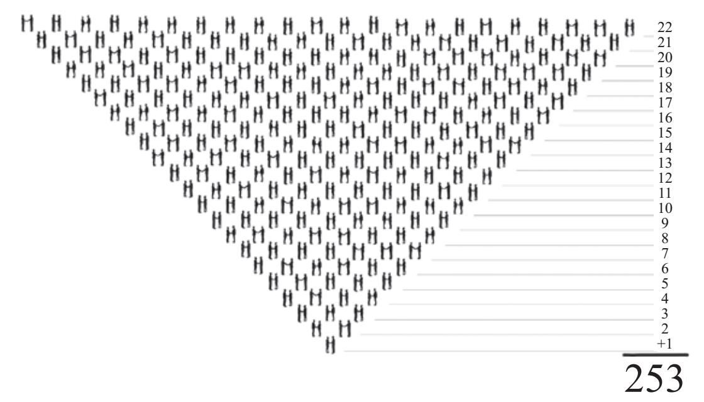
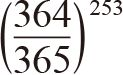
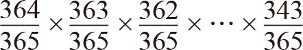
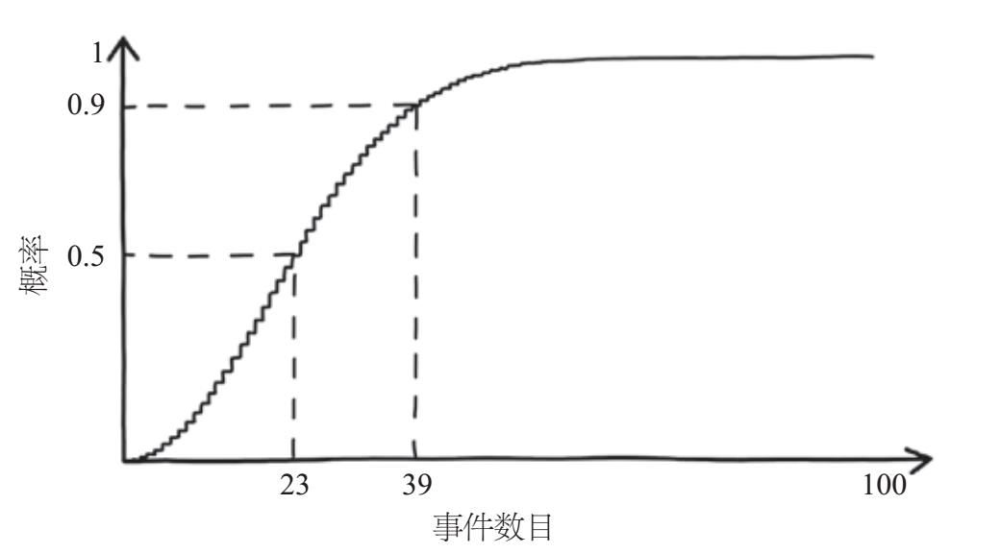
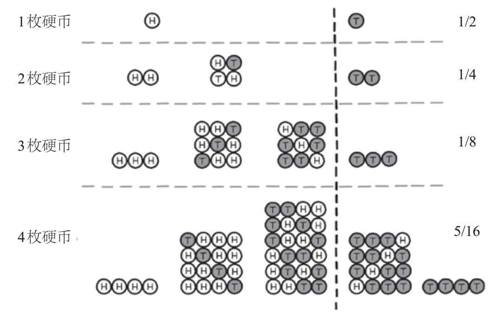
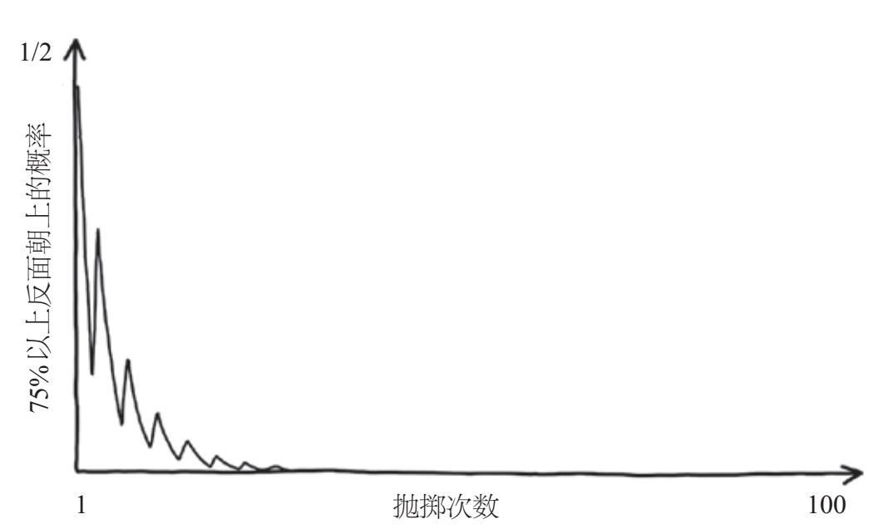
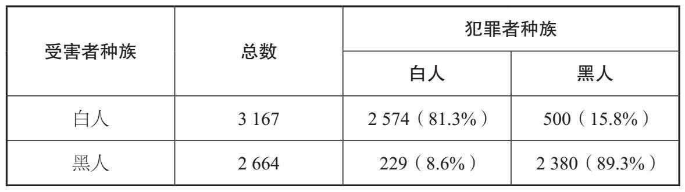
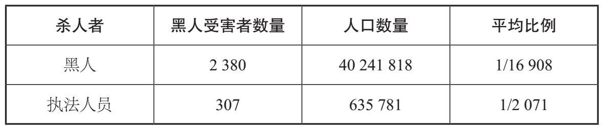
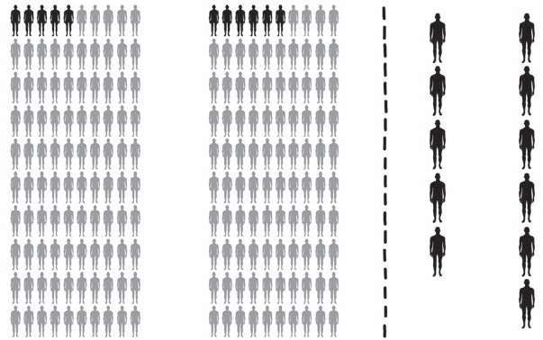
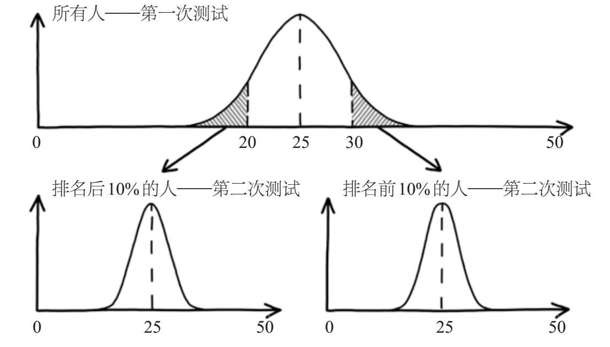

《不要相信真相》是来自曼彻斯特的绿洲摇滚乐队的第六张专辑的名字。成长于20世纪90年代的曼彻斯特的我，十分痴迷绿洲乐队。我曾在城市的各处看他们的演出，就在这张专辑发表后的2005年，我去看了他们在曼彻斯特体育馆的演出，那里是我心爱的曼城足球俱乐部的主场。十几岁的时候，我常常在曼彻斯特的很多地方定期观看他们的演出，比如阿波罗剧院、夜与日咖啡厅、汽车旅馆，还有专门为更大牌的乐队服务的曼彻斯特竞技场。
到2017年，绿洲乐队早已解散，我也离开曼彻斯特10多年了，但我过去经常去的许多音乐场所依然受欢迎。2017年5月22日晚上10点半左右，阿丽亚娜·格兰德音乐会在曼彻斯特竞技场刚刚结束。许多青少年观众涌向门厅去与他们的父母会合，与此同时，23岁的萨勒曼·阿贝迪站在人群之中，一动不动。他的肩膀上背着一个帆布背包，里面装满了自制炸弹所需的螺母和螺栓。当晚10点31分他引爆了炸弹，造成22人死亡，数百人受伤。这是自2005年的爆炸事件以来英国境内发生的一起最严重的恐怖袭击事件，2005年那次事件的袭击目标是伦敦交通网，造成了56人死亡。
袭击事件发生时我不在曼彻斯特，也不在英国。当时我正在墨西哥城工作，由于6小时的时差，我是在下午看到了有关袭击的报道。虽然距离事发地超过5 000英里，但由于我也曾在一场演出结束后穿过那个大厅，所以我非常震惊。接下来的几天，我尽可能地搜集关于这次袭击事件和故乡人们的反应的报道。《每日星报》上的一篇文章引起了我的注意，它的标题是《日期对圣战者来说很重要——发生在李·里格周年纪念日的曼彻斯特竞技场袭击事件》。文中特意引用了美国总统唐纳德·特朗普的副助理塞巴斯蒂安·戈尔卡的推文：“曼彻斯特爆炸事件发生在士兵李·里格被当街杀害事件的4周年之际，可见日期对恐怖分子来说很重要。”
戈尔卡注意到了两次恐怖袭击日期的相同之处。第一次发生在2013年5月22日，两名尼日利亚裔基督徒在皈依伊斯兰教后，持刀袭击并杀死了一名英国士兵。第二次是在2017年5月22日，一名利比亚裔穆斯林实施了非政治性自杀式炸弹袭击。戈尔卡在他的推文中暗示，曼彻斯特竞技场的袭击事件是经过精心策划的，故意在李·里格被谋杀的周年纪念日实施。很显然，如果这是真的，伊斯兰恐怖组织就是一个计划严密、团结一致的组织，故意在选定的日期发动袭击。然而，这在某种程度上与对阿贝迪的独狼形象的描述不符。
恐怖组织的组织性和纪律性似乎使它们更具威胁性。戈尔卡发表推文的目的似乎是增加人们对恐怖主义的畏惧，这也许是为了支持特朗普总统发布的备受争议的行政命令：为保护美国限制穆斯林入境。它使得许多穆斯林无法前往美国，也与一些法律条文相悖。但我想知道的是，这种论述是真的吗？鉴于对《每日星报》的信任，我们是否应该相信戈尔卡的断言？这种毫无根据且激进的言论难道不是正中恐怖分子下怀吗？我想知道的是，在某一年的同一天发生两起恐怖袭击事件并且完全出于巧合的可能性有多大？
*
我们正在遭受我们读到、看到和听到的数字的轰炸。比如，关于21世纪生活方式对我们的健康影响的大样本研究，正在以前所未有的速度增长。同时，解释这些研究结果所需的数学技巧随之增加。在许多情况下，其实根本没有什么特殊的技巧，统计数据本就难以解释。然而，对某个特定发现进行解释，可能会对某个党派更有利。
在假新闻横行的时代，很难辨识出谁值得信任。不管你信不信，大多数主流媒体都把它们编造的故事置于事实之上。在几乎所有的新闻职业道德和从业守则中，真实性和准确性几乎都高居首位。[1]除了说实话的道德义务之外，诽谤行为可能极具破坏性，代价也很昂贵，因此澄清事实是有其经济动机的。
然而，许多媒体报道的事实之间会存在差异，主要是因为他们对故事有倾向性。比如，当特朗普总统的税收改革法案（美其名曰《减税和就业法案》）于2017年12月通过时，福克斯电视台的记者埃德·亨利评价其为“重大胜利”和“总统迫切需要的胜利”。然而，微软全国广播公司（MSNBC）的劳伦斯·奥唐纳在提到投票支持这项法案的共和党参议员时称，“这是国会最丑陋的猪猪秀”。美国有线电视新闻网（CNN）的杰克·塔佩尔则提出了这样的问题：“在国会通过的重大法案中，还有比这一项获得的支持更少的吗？”
你可以轻松地发现上述表述中存在的言语偏见，并推断出三家新闻媒体各自想推动的政治议程。通过人们的话语很容易发现党派关系，而数字更容易被秘密操纵产生导向性，因为人们可以通过挑选统计数据将故事以特定的角度呈现出来。其他维度的数据则被完全忽略了，所以错误的故事往往是由遗漏造成的。有时，研究方法本身就不太可靠。小型、不具代表性或有偏见的样本及选择性报告，都有可能产生不可靠的统计数据。更加微妙的是，如果使用脱离语境的统计数据，就会导致我们无从判断真相。比如，病例增加300%可以表示从1个患者增加到4个患者，也可以表示从50万名患者增加到200万名患者，因此上下文的语境很重要。我的意思不是说这些对数字的不同解释都是谎言，其实每一种解释都展现了真实故事的一部分。但要注意，这并不是全部真相。有人会从他们偏好的角度去解读这个故事，我们只能试着去拼凑这些被夸大的事实背后的真相。
在本章中，我们将分析并揭开在报纸头条、广告栏和政治声音中人们有意或无意设置的一些陷阱。我们也将介绍类似的存在数学操控的领域，其中很多都是我们意想不到的地方，比如给患者提供建议的出版物或科学文章。我们还将提供一些简单的方法，告诉你如何了解故事的全貌，并提供一些工具帮你正确使用统计数据，弄清楚什么时候应该相信真相。
最微妙但通常也是最有效的数学误导，就是那些数字似乎并没有起作用的表述。在“日期对恐怖分子来说很重要”这句话中，戈尔卡诱导我们评估两起恐怖事件恰巧在同一天发生的可能性，并明确表示这不太可能。为了找出正确的答案，我们来看看“生日问题”这个数学思想实验。
生日问题的具体内容是：如果一场聚会上随机选择的两个人生日在同一天的可能性超过50%，那么聚会至少有多少人参加？若你是第一次被问及这个问题，那么你通常会想到数字180，它大约是一年中所有天数的一半。这是因为我们倾向于把自己代入问题描述的情境，然后考虑其他人和我们的生日在同一天的可能性。事实上，180这个数字太大了。假设人们的生日在一年中是近似均匀分布的，那么这场聚会有23个人参加即可，因为我们并不关心生日具体是哪一天，只要匹配上就行。
为了深入了解为何所需人数如此少，我们先考虑一下房间里的人可以组成多少对，即把生日在同一天的人组成一对，这也是问题的关键所在。为了计算一个有23人的房间里可以组成多少对，我们可以想象把每个人都排在队伍中并要求他们互相握手。第一个人与其他22个人握手，第二个人与其未握过手的21个人握手，第三个人与其未握过手的20个人握手，以此类推。最后，倒数第二个人和1个人握手，因此我们需要计算22 + 21 + 20 + …… + 1是多少。通常这类计算并不简单，但对于23个人是比较容易的，如果增加到50人就会十分单调乏味。像这样从1开始的连续整数的和被称为三角数，如图4–1所示，我们可以在整齐的三角形阵列中排布这些数字。幸运的是，有一个通用公式可对三角数求和。如果房间中的人数为N，那么总的握手次数为N (N–1)/ 2。如果有23人，就是（23×22）÷2，即253对。根据这个数字，房间里至少有两人的生日在同一天的概率达到50%以上，就毫不奇怪了。

图4-1 23个人彼此握手的次数。第一个人和其他22个人握手，第二个人和21个人握手……倒数第二个人和1个人握手。因此23个人彼此握手的总次数是前22个自然数之和，三角数求和公式告诉我们这个和为253对
为了计算这个概率，你可能首先要考虑任何人的生日都不在同一天的概率。对于任何一对，我们都可以轻松算出他们的生日不在同一天的概率。比如，第一个人可以在一年365天中的任何一天过生日，第二个人则可以在剩下364天中的任何一天过生日。因此，两个人不在同一天过生日的概率非常大，为364/365（或99.73%）。然而，由于总共有253对，我们想算出每一对生日都不同的概率，其他252对的生日也要不同。如果所有这些配对彼此独立，那么253对中没有任何一对生日在同一天的概率就可以由其中一对生日不在同一天的概率得到，也就是364/365的253次方，即

。虽然364/365非常接近1，但在计算它的253次方时，得到的没有任何两人生日在同一天的概率为0.4995，略小于1/2。由于任意两个人的生日都不在同一天和有两个及更多人的生日在同一天是仅有的两种可能性（在数学上称它们是“完全穷尽”），这两个事件的概率之和一定为1。因此，有两个或更多人的生日在同一天的概率是0.5505，略大于1/2。实际上，并非所有配对都彼此独立。如果A与B同一天生日，B又与C同一天生日，那么我们知道A和C也一定是同一天生日，这意味着两者不再彼此独立。如果他们彼此独立，那么只有1/365的概率是同一天生日。考虑到这些依赖关系，匹配概率的精确计算比我们在前文中假设他们彼此独立的情况更为复杂，这种计算必须依次将每个人纳入考虑范畴。对于两个人，我们确定他们的生日不在同一天的概率是364/365。如果他们的生日与其他人都不在同一天，我们就可以纳入一个生日是其余363天中的某一天的人。因此，三个人生日不在同一天的概率是（364/365）×（363/365）。第四个人只能在剩下362天中的某一天过生日，因此4个人生日不在同一天的概率下降到（364/365）×（363/365）×（362/365）。这种模式将一直持续到我们将第23个人考虑进来，他可以在剩下343天中的任何一天过生日。于是，23个人生日不在同一天的概率可以由如下算式给出：

这个算式告诉我们，23个人中的任意两个人生日不在同一天（考虑可能的依赖关系）的确切概率是0.4927，略低于1/2。再次利用完全穷尽原则，剩下的唯一可能性——至少有两个人是同一天生日——的概率略高于1/2，即0.5073。如果有70个人，就可以匹配出2 415对。精确的计算告诉我们，匹配概率超过0.999。图4–2展示了随着我们考虑的独立事件数量从1增加到100，两个事件发生在一年内的同一天的概率将会如何变化。

图4-2 两起事件恰好发生在同一天的概率随事件数目增长的变化情况。如果有23个事件，匹配的概率比1/2高一点儿；如果有39个独立事件，那么两起事件发生在同一天的概率接近0.9
当我和经纪人第一次见面讨论本书的写作计划时，我用这个生日问题给他留下了深刻印象。以请喝一杯酒为赌注，我告诉他我可以在人数不多的酒吧里找到两个生日在同一天的人。他扫视了周围一圈后说，如果我真能找到这样两个人，他愿意请我喝两杯。他觉得我肯定找不到。我花了整整20分钟，面对了许多困惑的表情，并用一些无关痛痒的解释化解了尴尬（“好吧，我是一名数学家”，我是这样告诉他们的）。最后我找到了同一天生日的两个人，克里斯愿赌服输。我这样做对他而言可能不太公平，因为我走进酒吧的时候，粗略统计了一下里面大约有40位客人。按这个基数计算，我输掉的可能性只有11%。这个简单的数学把戏不仅可以在酒吧中欺骗毫无戒心的人，还具有更深远的影响。特别是，它可以帮助我们验证戈尔卡所说的恐怖分子可以随心所欲实施袭击的能力。
从2013年4月至2018年4月的5年间，伊斯兰恐怖分子对西方世界（欧盟、北美洲、澳大利亚）发动了至少39次恐怖袭击。乍一看，如果这些事件是在一年内随机发生的，那么两起恐怖袭击事件似乎不太可能在同一天发生。然而，因为有741个可能的配对，所以两起恐怖袭击发生在同一天的概率约为88%，如图4–2所示。如果这些袭击事件中没有任何两起发生在同一天，我们才应该感到惊讶。当然，这对预测未来的恐怖袭击事件的发生概率没有任何帮助。戈尔卡对伊斯兰恐怖分子的组织能力似乎给予了高度评价，但事实并非如此。
*
和生日问题相同的推理过程告诉我们，我们必须小心使用在现代的许多刑事案件中十分有用的DNA证据。2001年，在搜索亚利桑那州DNA数据库中的65 493个样本时，一位科学家发现了两个不相关样本之间存在部分匹配的现象——这两个样本的13处基因座有9处相匹配。从另一个角度看，对于给定的两个不相关个体，我们估计在每3 100万份样本中，大约只有一对样本可以匹配。这一震惊的发现使得人们想知道有没有更多可能的匹配。当比较数据库中的所有样本时，研究人员共发现了122对无关个体至少有9处基因座相匹配。
基于这项研究，[2]学术界现在开始怀疑DNA标识的唯一性，美国各地的律师也主张对其他DNA数据库做类似的比较，包括含有1 100万样本的全美DNA数据库。如果在一个仅有65 000个样本的数据库中就出现了122次匹配，那么DNA真的可用于精准识别一个包含了3亿人口国家的嫌疑人吗？[3]因为与DNA图谱相关的概率不正确，难道就要推翻全美范围内基于DNA定罪的所有案件吗？一些律师认为答案是肯定的，甚至提交了亚利桑那州的调查结果作为证据，表达他们对DNA证据可靠性的质疑。
实际上，借助三角数求和公式，我们就可以得出结论，如果将亚利桑那州数据库中的65 493个样本逐个进行比较，那么总共能提供超过20亿个独一无二的样本对。如果每3 100万对不相关的样本中有一对可以匹配，那么我们预期有68对是部分匹配（有9处基因座相匹配）的。预期的68次匹配与实际的122次匹配之间的差异，可以很容易地通过数据库中近亲较多的情况来解释。与不相关的个体相比，近亲之间更有可能发生部分匹配。根据三角数求和的结果，数据库的实际匹配情况与数学推理的结果相当吻合，可见DNA证据仍然是可信的。
《每日星报》的原始报道强调了士兵李·里格被谋杀和曼彻斯特竞技场被袭击的日期相同这一巧合，而我们验证戈尔卡观点所需的统计数据则隐藏在暗处。这与大多数广告商使用数字的方式形成了鲜明对比。广告商一旦找到讨人喜欢的数字，就会将其广而告之。广告商知道，数字总被视为无可争辩的事实，所以在广告中添加一些数字可能会更具说服力，也能很好地支撑营销卖点。统计数据的客观性意味着，“不要只相信我们说的话，更要相信你看到的数据”。
2009—2013年，欧莱雅公司为预热兰蔻品牌的一款抗衰老产品开始打广告。除了通常的广告话术（“青春就在你的基因中，是时候重新激活它了”，“现在开始促进基因活动”并刺激“年轻蛋白质”的产生）之外，这则广告中还展示了一幅条形图，声称有85%的消费者拥有“完美发光”的皮肤，有82%“拥有光滑的皮肤”，有91%拥有“柔软”的皮肤，有82%的人在短短7天后皮肤的“整体外观得到改善”。抛开对改善效果的模糊描述不谈，这些数据令人印象十分深刻，是对该产品品质的有力支撑。
然而，在对数字做了一番深入研究后，我们发现了一个完全不同的故事。参与研究的女性被要求每天使用该产品两次，并反馈她们的感受。相关表述包括：“皮肤看起来更有光译了”，“肤色看起来更光滑了”，“皮肤摸上去更柔软了”。受试者根据9分制对产品效果进行评价，1表示“完全不同意”，9表示“完全同意”。受试者无须评价皮肤的光泽度或柔软度，而只需回答她们在多大程度上同意或不同意这些表述。
调查结果显示，7天后虽然有82%的女性认同（在9分制中得分为6~9分）她们的皮肤看起来更加光滑，但只有不到30%的人给了9分。同样，虽然有85%的人认为她们的皮肤看起来更有光泽，但只有35.5%的人给了9分。而广告则篡改了调查结果，使产品看起来比实际效果更出众。
也许更值得关注的是研究规模。由于只有34名受试者，所以很难确定结果是否可靠，这种效应被称为“小样本波动”。与大样本相比，小样本给出的结果通常会与真实的总体平均值有较大的偏差。为了说明这一点，假设我有一枚未加权的硬币，抛掷后它有50%的可能性正面朝上，有50%的可能性反面朝上。出于某种原因，我想说服人们相信这枚硬币更有可能出现反面朝上的结果。如果我能展示出硬币在至少75%的情况下反面朝上，就可以说服他们相信这一点。当样本大小（硬币的抛掷次数）增加时，我说服他们相信的概率会如何变化呢？
我可能会尝试只抛掷一次硬币。如果它反面朝上，我自然很高兴，因为它使反面朝上的概率（100%）超过了75%的阈值。然而，这种情况只有50%的可能性发生。一次反面朝上给了我最好的理由说服别人相信硬币是加权的，但他们认为需要更多的数据才能证实这一点，并且要求我再抛掷一次。如果抛掷两次，我就需要掷出两次反面朝上，才能说服其他人相信硬币是加权的。而掷出一个反面朝上和一个正面朝上是不够的，因为在这种情况下反面朝上的概率仅为50%。正如我们在图4–3中看到的那样，两次反面朝上是抛掷两次均匀硬币的4个可能结果之一，所以我只能说服大约1/4的人。随着样本数目的增加，反面朝上的概率至少为75%的可能性不断减小，如图4–4所示。当我抛掷100次时，我说服其他人相信硬币已加权的概率会降至0.00000009。

图4-3 投掷1~4枚硬币的所有可能的结果。虚线将反面朝上的概率至少为75%和低于75%的两种情况分隔开
随着样本量的增加，平均值附近的振荡减小（在这个例子里，平均值是指有50%的概率反面朝上），说服他人相信本来就不正确的论断也变得越来越难。正因如此，当看到相关研究只有34名参与者时，我们就应该对欧莱雅广告中的数据可靠性持怀疑态度了。

图4-4 说服某人相信一枚公平的硬币被加权的可能性随硬币抛掷次数增加的变化情况
通常情况下，样本量较小的广告会选择以百分比的形式报告其研究发现（有82%拥有光滑的皮肤），而不是以比率的形式（34人中有28人的皮肤令人惊讶地变得光滑），这有助于隐藏令人尴尬的小样本量。然而，如同前文中的例子所展示的那样，小样本的标志是有两个百分比相同（有82%的人的皮肤整体外观得到改善）。因为如果样本量更大，出现同样多的人对两个不同问题给出肯定回答的可能性越来越小。
2014年，美国联邦贸易委员会（FTC）致函欧莱雅公司，指控他们在兰蔻抗衰老产品上做了虚假的广告宣传。[4]美国联邦贸易委员会称广告图表中的数字“虚假且具有误导性”，因为科学研究从未证实这一点。作为回应，欧莱雅公司被迫同意停止“夸大产品效果的虚假广告宣传”。
除了小样本偏倚外，对于这款抗衰老产品所做的调研可能还受到了“志愿者反应偏倚”或“选择偏倚”等抽样偏倚的影响。欧莱雅公司通过其网站招募受试者，他们很可能选择了那些对该产品的潜在好处敏感的女性，从而得到良好的评价（志愿者反应偏倚）。另外，他们或许特意挑选那些曾给予欧莱雅产品相当高评价的女性作为受试者（选择偏倚）。
还有其他更值得怀疑的方式会被研究项目、民意调查或政治声音利用，以获得人们的支持。如果34名参与者在第一次调查中没有给出有利的结果，那么何不再做一次调查，直到符合需要的令人印象深刻的结果出现？或者，为什么不进行更大规模的试验，并精心挑选能给出肯定回答的参与者？这就是数据操纵，或者干脆叫伪造数据。一个常见的例子是报告偏倚。研究伪科学现象（比如替代疗法或超感官知觉）的科学家发现研究者总是存在报告偏倚，他们总是选择对自己有利的试验人群。一些不择手段的研究者只报告“积极的结果”（比如从替代疗法中获益的参与者，灵媒在洗过的纸牌中正确预测出下一张牌的花色），而大多数消极的结果则被舍弃，这使得调查结果看起来比实际情况更有利。正如《文学摘要》杂志的编辑们发现的那样，当两种或更多的偏倚相结合时，它们给出的结果与无偏样本将截然不同。
1936年美国总统选举之前，《文学摘要》杂志进行了一项民意调查来预测当选者，候选人是当时的总统富兰克林·罗斯福和共和党的阿尔夫·兰登。《文学摘要》有过正确预测下一任总统的光辉历史，可以追溯到1916年。1932年，该杂志曾成功预测罗斯福的胜率在一个百分点之内。[5] 1936年，该杂志的民意调查与它以往的任何一项民意调查一样雄心勃勃，且花费高昂。《文学摘要》根据汽车登记记录和电话簿创建了一份包含大约1 000万个人名（约占投票人口的1/4）的清单。8月，他们向所有已确认身份的人发出了民意调查表，并在杂志上大肆宣传，[6]“依据过去的经验，我们的统计数据可以精确到实际的4 000万张选票的1%以内”。
截至1936年10月31日，《文学摘要》收回并统计了超过240万份民意调查表，他们已经迫不及待地要宣布预测结果了，并以《兰登，1 293 669票；罗斯福，972 897票》为标题发表了相关文章。[7]《文学摘要》预测兰登将会获得选举的胜利：他将以55%的大众选票占胜罗斯福的41%（第三名候选人威廉·莱姆基的票数仅为4%），并获得531张选举人选票中的370票。然而，仅仅4天之后，当选举结果公布时，该杂志震惊地发现罗斯福再次入主白宫。这也不是一场险胜，而是压倒性胜利。罗斯福赢得了60.8%的大众选票，这是自1820年以来最高比例的大众选票。而且，罗斯福获得了523张选举人选票，而兰登只有8张。《文学摘要》对此次大众选票的预测出现了近20个百分点的偏差。我们可能认为在样本量较小的情况下调查结果可能会有很大偏差，但《文学摘要》调查了240万人，拥有这么大的样本，他们怎么还会出这么大的错？
答案在于抽样偏倚。民意调查遭遇的首要问题就是选择偏倚。1936年，美国仍处于大萧条时期。拥有汽车和电话的人更可能是社会中的富裕阶层。因此，《文学摘要》样本名单向中上阶层选民倾斜，这个人群的政治观点更偏向右派，对罗斯福的支持率没那么高。而不太富有的人群是罗斯福的核心支持者，他们在民意调查中几乎没被统计在内。
就民意调查的结果而言，可能更重要的是无反应偏倚现象。在原始名单罗列的1 000万人中，只有不到1/4的人给出了回复。该调查也没有再对这1 000万人进行抽样调查。即使最初选定人群的统计数据代表了总人口（事实并非如此），对调查做出回复的人与无回复的人往往持有不同的政治态度。更富有、受过良好教育的人大多是兰登的支持者，而不是罗斯福的支持者。这两个抽样偏倚相结合，给出了令人尴尬的错误结果，也使《文学摘要》沦为笑料。
同年，《财富》杂志根据仅仅4 500名参与者的调查结果，[8]就将罗斯福的胜率预测误差控制在1%以内。相比之下，《文学摘要》表现得非常糟糕。在之后不到两年的时间里，《文学摘要》杂志迅速走向衰落，其中一个重要因素可能是，该杂志此前不容置疑的可信度在民意调查结果与实际结果南辕北辙之后一落千丈。[9]
尽管政治方面的民意调查者发现他们必须具备统计思维才能获得准确的结果，但政治家却发现他们可以比以往任何时候更容易地操纵统计数据、挪用公款和玩忽职守。在2015年11月竞选共和党总统候选人提名时，唐纳德·特朗普在推特上发布了一张图片，其中包含以下统计数据：
被白人杀死的黑人——2%
被警察杀死的黑人——1%
被警察杀死的白人——3%
被白人杀死的白人——16%
被黑人杀死的白人——81%
被黑人杀死的黑人——97%
这些数字据称来源于旧金山犯罪统计局。但其实，旧金山犯罪统计局根本不存在，上述统计数据也与实际数据大相径庭。美国联邦调查局2015年发布的实际统计数据（表4–1中给出了原始数据）如下：
被白人杀死的黑人——9%
被白人杀死的白人——81%
被黑人杀死的白人——16%
被黑人杀死的黑人——89%
显然，特朗普的推文夸大了黑人犯下的凶杀案数量，并且将“被白人杀死的白人”和“被黑人杀死的白人”的统计数据互换了。然而，这条推特被转发了7 000多次，点赞数超过9 000次。这是确认偏倚的典型例子。人们之所以转发这一虚假信息，是因为它来自他们尊重的人，而且符合他们既有的偏见。他们没有查证它是否属实，当然，特朗普也没有。当福克斯电视台的记者比尔·奥莱利询问特朗普传播该消息的动机时，特朗普以他的典型风格回应道，“我可能是这个世界上最没有种族偏见的人”。之后他补充道：“难道我要检查每一个统计数据的真实性吗？”
*
特朗普2015年发布这条推文时，正值关于警察暴行的全国性辩论的高潮，特别是对黑人受害者的暴行。这些案件以手无寸铁的黑人青少年特雷沃恩·马丁和迈克尔·布朗的死亡为代表，成为“黑人的命也是命”运动发起和迅速扩大的催化剂。2014—2016年，该运动在美国多地举行了大规模的抗议活动，包括游行和静坐。2016年9月，该运动开始在英国兴起，抗议活动引起了右翼记者罗德·里德尔的愤怒。一篇以数学为导向的博客文章[10]引起了我对里德尔在英国《太阳报》上所发评论的关注，该评论也是围绕美国的“黑人的命也是命”运动展开的：
它的发起是为了抗议美国警察未按标准程序逮捕黑人嫌疑人，而是直接开枪射杀他们。
毫无疑问，美国警察喜欢开枪，特别是当一个黑人嫌疑人出现在视野中时。
同样，美国黑人面临的最大危险毫无疑问是……嗯……其他黑人。
黑人谋杀黑人的案件平均每年有4 000多起，而每年被美国警察杀害的黑人男性超过100人。
去算一下吧！
下面，我们来做个简单的计算。
2015年的数据是里德尔可以接触到的最近一个完整年的数据。根据表4–1总结的联邦调查局的统计数据，[11] 2015年美国境内有3 167名白人和2 664名黑人被杀害。在受害者为白人的案件中，有2 574名（81.3%）犯罪者是白人，有500名（15.8%）犯罪者是黑人。在受害者为黑人的案件中，有229名（8.6%）犯罪者是白人，有2 380名（89.3%）犯罪者是黑人。所以，里德尔说平均每年发生4 000起黑人杀害黑人的案件，这显然夸大了事实，数据被他夸大了70%。鉴于2015年黑人占美国人口的12.6%，白人只占73.6%，而黑人受害者占凶杀案受害者的45.6%，这一点反而更值得我们注意。[12]

尽管这是一个备受争议的问题，但被警察杀害的黑人人数却很难统计。白人警官达伦·威尔逊向黑人少年迈克尔·布朗射出的致命一枪，以及随后针对密苏里州弗格森举行的抗议活动，标志着“黑人的命也是命”运动达到了高潮。这些抗议活动也引起了人们对美国联邦调查局每年统计的警察杀人案件数量的关注，人们发现美国联邦调查局只记录了不到一半的案件。[13]作为回应，2014年，《卫报》发起了一项“计数”运动，倡导收集更准确的统计数据。该项目非常成功，2015年10月，时任联邦调查局局长詹姆斯·科米声称：“《卫报》掌握的关于警察造成平民死亡的统计数据比美国联邦调查局还要精确，这太荒谬了！”[14]
《卫报》的统计数据显示，2015年在被警方杀害的1 146人（这个数据足以回应里德尔）中，黑人有307人（26.8%），白人有584人（51.0%），其余受害者为其他种族或种族不明。由此可以看出，里德尔的数据远远偏离了实际情况，他提出的每年死于警察之手的黑人数量还不到实际数量的1/3。
假设问里德尔一个问题：“如果在美国有一名黑人被杀，那么他更可能被黑人还是被警察杀害的？”根据正确的统计数据，显然是黑人杀了更多黑人，而不是警察，两者相差7倍（2 380∶307）。但是，这个问题似乎有点儿狡猾。如果我告诉你，2019年被狗咬死的美国公民有40个，而被熊咬死的只有两个，那么你会不会认为狗比熊更具威胁性？当然不会。狗没有熊危险，只不过在美国狗的数量更多。换个问法就是，如果让你选择和一只熊或一条狗一起待在一个房间里，你会选择哪一个动物？我不知道你会怎么选，但我很可能会选那条狗。
出于同样的原因，美国有超过4 020万黑人，而只有635 781名全职执法人员（配有枪支和警徽）[15]，因此黑人杀害的黑人比执法人员多，这并不令人惊讶。对里德尔来说，更合适的问法可能是：如果一个黑人在美国街头碰到了某个人，他更应该害怕被谁杀死，另一个黑人还是一名执法人员？
为了找到答案，我们需要比较黑人杀害黑人和警察杀害黑人的平均比例。如表4–2所示，我们用特定群体（黑人或警察）杀害的黑人数量除以该群体的数量来得到这个平均比例。2015年约有2 380名黑人是被黑人杀死的，但全美有超过4 020万黑人，所以这个平均比例较小，约为1/17 000。2015年，警察杀害了大约307名黑人。全美有635 781名警察，这个比例约为1/2 000，是黑人杀死黑人比例的8倍多。由此可见，走在街上的黑人似乎更应该警惕靠近他们的警察。

当然，我们在这里忽略了受害者与警察的接触往往是在对抗性场景中，而且美国警察通常会随身携带武器。得到使用致命武器授权的人会比一般人更频繁地使用武力，这或许并不令人意外。通过完全相同的数学计算，我们可以证明相较其他白人，白人也应该更害怕警察（警察杀死白人的平均比率为1/1 000，而白人杀死白人的平均比率为1/90 000），尽管白人比警察杀害的白人数目更多。事实上，警察杀死白人的平均比率是警察杀死黑人比率的两倍，因为美国的白人更多。同样，考虑到美国白人的数量几乎是黑人数量的6倍，但被杀害的比例仅为黑人的2倍，这听起来有点儿令人不安。
因此，虽然里德尔的统计数据是不正确的，而且他的论点很狡猾，但或许更重要的是，通过问“谁杀死的人最多”而不是问“被杀死最多的是谁”，他在《太阳报》上的文章将大众的注意力转移到堪称“黑人的命也是命”运动核心的一组统计数据上：占美国人口12.6%的黑人占警察杀人案受害者的26.8%，而占美国人口73.6%的白人仅占警察杀人案受害者的51.0%。是否存在隐藏的联系（上一章解释吸烟可能对低体重婴儿更有利的潜伏变量）可以解释这种差异？答案几乎是肯定的。比如，较贫穷的人更容易犯罪，而在美国，黑人是穷人的可能性更高。但这些因素能否解释黑人在警察杀人案的统计数据中占比过高的问题，还有待进一步观察和分析。
《太阳报》不止一次被卷入统计争议。2009年，《太阳报》根据世界癌症研究基金组织的一项长达500页的研究报告，只报道了每天吃50克加工肉类的几百个影响中的一个，以《不小心吃猪肉要人命》为题发表了一篇文章。[16]其中提及的“每天吃一个培根三明治将使结肠癌的发病风险提高20%”震惊了读者。
但这个数字实在是耸人听闻。如果你以绝对风险——暴露或未暴露于某一特定风险因素（比如吃培根三明治或不吃培根三明治）的人群在每种情况下出现特定结果（如癌症）的比例——的形式表述这个事实，它其实是指每天摄入50克加工肉类会使结肠癌的发病风险从5%提高到6%。在图4–5的左侧，我们比较了两组人的命运，每组100人。该图表明，每天吃培根三明治的100人中患结肠癌的人数仅比每天不吃的100人中患病的人数多一人。

图4-5 左边给出的绝对数值（5/100和6/100）表明，每天吃50克加工肉类只会使患病风险增加一点儿。但如果看右边的相对风险，则会增加20%，这看起来就很严重了
比起更客观的绝对风险，《太阳报》选择突出相对风险——暴露于特定风险因素（比如吃培根三明治）并出现特定结果（比如患癌症）的人占一般人口的比例。如果相对风险高于1，那么与未暴露于该风险因素的人相比，暴露的人更有可能患病。如果相对风险低于1，则后者的患病概率会降低。在图4–5的右侧，如果忽视未患病的人，相对风险（6/5或1.2）的增加幅度似乎更显著。虽然每天食用50克加工肉类的人患结肠癌的相对风险确实增加了20%，但绝对风险仅仅增加了1%。然而，风险增加1%并不能让报纸大卖。果然，在这篇标题颇具煽动性的文章发表后，美国社会掀起了一场“拯救培根”的舆论风暴。在接下来的几天里，这一数字引发的愤怒让科学家们有了“健康纳粹”的称呼。
另一个引人注目的媒体技巧是，故意改变我们既有认知中的正常人群。媒体报道相对风险的诚实方式应该是，与一般群体的背景风险相比，特定子群体的风险是增加了还是减少了。有时，也可以将最大亚群的疾病风险水平作为基线，去报道相较该群体的风险偏差。当某种疾病比较罕见时，无疾病人群几乎构成了整个人群，因此无病亚群风险与一般人群风险很接近。我们以BRCA1或BRCA2基因突变对女性乳腺癌的发病风险的影响为例。我们应该说发生这类突变的0.2%的女性相较普通人群的绝对风险增加了，而不应该说未发生突变的99.8%的女性相较普通人群的患病风险降低了。不幸的是，这种坦诚透明的报道可能无法成为吸引人的标题，因此我们看到许多重要的新闻媒体都在以操纵统计数据的方式，一次又一次地兜售故事。
2009年《每日电讯报》在一篇题为《9/10的人携带高血压基因》的报道中描述道：“科学家发现，接近90%的人携带的一种基因突变会导致高血压的发病概率增加18%。”但根据《自然遗传学》杂志实际报道的数据，10%拥有遗传变异的人，其患病风险比90%拥有其他突变的人低15%，[17]而18%的数字并没有出现。尽管从技术上讲是可行的，但《每日电讯报》的报道却自作主张地把参考人口改成了人数较少的那部分——有较小患病风险的10%的人。1减少15%就是0.85，于是文章的作者意识到，从0.85增长到1大约增长了18%。借助一种数学手段，《每日电讯报》不仅增加了相对风险的大小，还成功地将对10%的人的好消息变成了对90%的人的坏消息。《每日电讯报》绝对不是唯一一个操纵统计数字的媒体，许多报纸都在以同样可疑的方式编造故事，吸引读者的眼球。
在阅读一篇耸人听闻的文章时，你通常会发现文章中并没有提及绝对风险。绝对风险一般表现为两个较小的数字（当然不会超过100%）：一种是为那些相关人群准备的，另一种是为剩下的人准备的。在其他时候，媒体可能会声称有超过一半的人的发病风险会增加或减少。在这些情况下，你应该仔细考虑是否接受这些文章的观点。如果你想了解头条新闻背后的真相，可以考虑追踪相关统计数据，甚至查询原始研究文献，很多文献都可以在线免费获得。
针对风险和可能性的可疑报道不仅出现在报纸上。当报告医疗风险或药物疗效及其副作用时，研究者可以用更多的统计游戏来达成特定目的。其中一种简单的方法就是以正面或负面的方式构建数据。在2010年的一项研究中，研究人员给参与者提供了许多关于医疗程序的数字陈述，并要求他们将每项陈述的相关风险按1~4排序（1为完全没有风险，4为风险很高）。[18]有两条陈述是：“罗先生需要做手术，每1 000名患者中约有9人死于手术”，“斯迈思先生需要做手术，每1 000名患者中约有991人在手术后存活”。花点儿时间考虑一下，你愿意成为罗先生还是斯迈思先生？
这两个陈述以两种截然不同的方式传递了相同的统计数据：第一种用的是死亡率，第二种用的是生存率。对算术能力欠佳的参与者来说，他们对正面陈述的风险评估低了将近一分。即使是具有较高计算能力的人，也会认为负面陈述传递的风险更高。
在审视医学试验的结果时，为了最大限度地发挥其感知效益，往往会以相对风险的方式报告阳性结果，同时以绝对风险的方式报告副作用，以使风险看起来不大。这种“失配框架”出现在三份权威的医学期刊上的大约1/3的文章中，它们无一例外地剖析了这种医疗报告方式的危害和益处。[19]
更令人担忧的是，这种现象也普遍存在于患者建议文献中。20世纪90年代末，美国国家癌症研究所（NCI）制作了“乳腺癌风险工具”，用于提醒大众患此疾病的风险。这个在线应用程序结合其他研究，报告了近年来的一项临床试验的结果，试验对超过13 000名乳腺癌患病风险增加的女性进行了评估，对药物他莫昔芬的益处和潜在副作用也一并进行了评估。[20]在临床试验中，这些女性被平均分成两组（一个是实验组，一个是对照组）。第一组女性服用他莫昔芬，第二组女性服用安慰剂。
在为期5年的研究结束后，为了评估药物的疗效，研究人员对每组中患有浸润性乳腺癌的人数和患有其他类型癌症的人数进行了比较。利用乳腺癌风险工具，NCI报告称相对风险降低了：“服用他莫昔芬的女性被诊断出患浸润性乳腺癌的人数减少了大约49%。”49%的数字看似令人印象深刻，但在量化可能的副作用时，绝对风险却显示：“……他莫昔芬组的子宫癌发病率为23/10 000，而安慰剂组为9.1/10 000。”这样小的差异似乎表明，他莫昔芬对子宫癌发病风险几乎没有太大影响。不管是有意还是无意，NCI的研究人员在收集风险评估数据时，强调了他莫昔芬在降低乳腺癌发病率方面的益处，同时尽可能地无视子宫癌发病风险增加的可能性。为公平起见，我们都用相对风险来表述，也就是用子宫癌患病风险增加153%来平衡乳腺癌发病风险减少49%，这样才比较合理。
原始文章的摘要使用了49%的乳腺癌发病率减少的数据，但子宫癌发病率的增加却使用了2.53的相对风险比。使用百分比而不是小数来突出感知是被称为“比率偏倚”[21]的技巧之一。我们通过一个简单的实验即可证实我们对比率偏倚的敏感性，该实验要求被蒙住眼睛的受试者随机从托盘中选取果冻豆。[22]如果拿到一个红色果冻豆，受试者将赢得1美元。受试者可以从含有9个白色果冻豆和1个红色果冻豆的托盘中蒙眼挑选，也可以从含有91个白色果冻豆和9个红色果冻豆的托盘中蒙眼挑选，结果表明他们大多会选择后者，但赢钱的概率反而变小了。据推测，这可能是因为托盘中红色果冻豆的数量越多，受试者认为选中其中一颗的概率就越高，而不考虑其他豆子的数量。一位受试者说：“我选择了红色果冻豆数量更多的托盘，因为这看起来获胜的机会更多。”
来自他莫昔芬研究的绝对数据表明，浸润性乳腺癌的病例从未接受过治疗的每1万人261例减少到每1万人133例。具有讽刺意味的是，如果排除比率偏倚和失配框架的影响，乳腺癌风险工具的用户能够很容易地看到，乳腺癌得到抑制的病例数量（128/10 000）大大超过了由服药引发的子宫癌病例数量（14/10 000），你无须操纵原始临床数据就能得此结论。
医学背景下的大多数统计失实可能都是由不熟悉常见统计缺陷的研究人员无意造成的。比如，选择一组不适宜临床试验的人作为研究对象，为他们提供治疗建议，并监测他们的病情改善情况，以便了解药物的疗效。如果症状得到缓解，该治疗方式似乎就是值得信赖的。
想象一下招募大量有关节疼痛症状的受试者，并在他们静坐时用蜜蜂蜇他们。（虽然听起来很荒谬，但这其实是一种替代疗法——蜂毒疗法。近年来蜂毒疗法越来越受欢迎，部分原因是格温妮丝·帕特洛在网络上推广了这一方式。）继续想象，一些患者的关节疼痛症状奇迹般地消失了，即通常所说的患者治疗后感觉好转。那么，我们能否得出蜂毒疗法实际上是治疗关节疼痛的有效方法呢？答案可能是否定的。实际上，没有科学证据证明蜂毒疗法能治疗疾病。相反，蜂毒疗法经常引发不良反应，已知至少有一名患者死于该疗法。但是，我们应该如何解释我们在实验中得到的积极结果呢？是什么改善了患者的症状呢？
关节疼痛等病症的严重程度会随时间的推移出现波动。那些参加实验的患者，尤其是接受像蜂毒疗法这样极端的另类疗法的患者，可能正处于一个特别低迷的时期，他们报名参加实验是为了让自己的病症能迅速得到缓解。如果他们是在关节最疼的时候接受了治疗，那么无论是否有疗效，一段时间之后他们很可能都会感觉好一些了。这种现象被称为回归均值，它是影响许多随机性实验的因素。
为了更好地理解回归均值的机制，可以以考试成绩为例。考虑这样一种极端情况：学生被要求用“是或否”回答他们完全不了解的某个领域的50个问题。如果学生完全随机地回答，测试的成绩可能从0分到50分不等，但很少有人能完全答对，也很少有人会完全答错。从图4–6所示的成绩分布来看，得到中等分数（接近25分的平均分）的人显然更多。如果我们分析前10%的学生，他们的分数将显著高于平均水平。因此，当我们给这些学生提出新问题并做第二次测试时，我们是否应该期望这些学生的表现会显著高于平均水平呢？当然不是，他们的得分仍会分布在平均分数25分附近。如果我们对得分最低的10%的学生进行第二次测试，情况也应如此。在第一次测试中获得最好或最坏成绩的学生在第二次测试中都会落在平均值附近。
在实际考试中，虽然技能和职业道德是影响学生成绩的重要因素，但也可能存在与考题和优先复习科目等相关的机会因素。假设存在某个随机因素，回归均值将记录下它的影响。机会因素在多项选择考试中的作用尤为突出，甚至没有掌握必要知识的学生也能猜出正确的答案。在1987年进行的一项研究中，研究人员挑选了25名在SAT（学术能力评估测试）中因为焦虑紧张而出人意料地表现不佳的学生，给他们服用了高血压治疗药物普萘洛尔，并让他们重新进行了测试。[23]据《纽约时报》报道，这项研究的结果是：“用于控制高血压的药物，大大提高了患有严重焦虑症的学生的测试成绩。”服用普萘洛尔的学生的成绩平均提高了130分，而他们原来的分数从400分至1 600分不等。乍看之下，普萘洛尔似乎具有显著的效果。然而，事实证明，即使是不焦虑的学生重新进行测试，他们的分数也会提高40分左右。这是因为参加实验的学生的第一次测试表现比他们的智商或其他学术能力指标显示的更差，所以第二次测试分数的显著提高也在情理之中，他们只是回归了均值。

图4-6 50个题测试分数的分布情况。如果对排名前10%的人（右侧阴影部分）进行第二次测试，他们的平均分和总体平均分相同。对于排名后10%的人（左侧阴影部分），该结论同样成立。不管是高分段还是低分段人群的测试成绩，都倾向于回归均值
如果缺少另一组测试成绩不佳的学生在未服用药物情况下进行第二次测试，即所谓的对照组，就无法确定干预措施的效果。在缺少对照组的情况下，人们很容易将成绩改善的表现归因于药物的作用。然而，随机选择测试的结果表明，极端数据向均值回归纯粹是一种统计现象。
*
避免错误的因果推断在医学试验中非常重要。一种方法是进行随机对照试验，患者被随机分配到治疗组或对照组。治疗组的患者接受真正的治疗，对照组的患者则接受安慰剂治疗。如果研究者和参与者都不知道谁在治疗组，那么该试验叫作双盲试验，它被公认为临床试验的黄金标准。在一项双盲随机对照试验中，对照组和治疗组之间的任何差异都只能归因于治疗方法，这就排除了回归均值的可能性。
从历史上看，对照组患者的任何症状的改善都被称为安慰剂效应，即接受治疗这一行为本身带来的益处，即使只是服用了一颗糖丸。然而，我们越来越清楚的是，这种效应包括两种截然不同的现象。其中一种可能占比略小，但它是一种真正的心身效应，患者感觉更好只是因为他们相信他们正在接受治疗。这种真正的安慰剂效应确实改变了患者对其症状的判断。如果患者知道他们正在接受真正的治疗，心身效应就会更大。而且有趣的是，即使只有实施治疗的人知道患者接受的是不是真正的治疗，患者的症状也会有相应的改善，这也是进行双盲试验的原因。
对照组患者症状改善的另一个或许更重要的原因是回归均值，但这种简单的统计效应不会给患者带来任何益处。确定这两种安慰剂因素中哪一种更重要的唯一方法是，比较假治疗和不做任何治疗的效果。这种试验通常被视为不道德的，但过去的研究充分证明，绝大多数所谓的安慰剂效应实际上是回归均值的结果，患者从中得不到任何益处。[24]
有些替代疗法的支持者辩称，即使他们的治疗只是安慰剂效应，它带来的好处也很重要，所以值得尝试。然而，如果安慰剂效应主要是由回归均值产生的，它对患者就没有任何好处，这个观点是站不住脚的。有些替代疗法的支持者认为，相较于将资金投入人工临床试验，考虑真实世界的结果更重要，或者换一种说法，就是专注于患者治疗后病情如何变化，而不是看对照组的试验结果。不出所料，这些庸医充分利用这一点，肆无忌惮地把回归均值的结果作为他们的不科学疗法的真正效益。普利策奖得主厄普顿·辛克莱说：“如果一个人的薪水取决于他不理解的事物，让他理解这些东西就会变得难上加难。”
*
在医学领域之外，回归均值对立法语境中的因果解释也产生了深远的影响。1991年10月16日，32岁的苏珊娜·格拉蒂亚坐在得克萨斯州基林的露比餐厅里，和她的父母一起吃午饭。由于是午餐高峰期，餐厅异常繁忙，用餐人数超过150人。12点39分，失业的商船海员乔治·亨纳德驾驶着蓝色的福特皮卡车加速冲向餐厅，径直穿过前窗进入用餐区域。紧接着他从车里跳出来，一只手拿着格洛克17手枪，另一只手拿着鲁格P89手枪，开始射击。
格拉蒂亚和她的父母最初以为是持枪抢劫，他们扑倒在地，并躲在桌子后面。然而，随着枪声的持续，格拉蒂亚清楚地认识到这个男人的目的并不是抢劫餐馆，而是屠杀。
枪手走近离他们的桌子几米远的地方，格拉蒂亚伸手去够她的包。她的包里藏有一把0.38英寸口径的史密斯威森手枪，这是多年前别人送给她自卫用的。然而，当她伸手摸枪时，她突然记起为了不违反得克萨斯州的隐藏武器法，她在下车前将这把手枪从包里掏出来并放在了车座下。她称这一举动为“我生命中最愚蠢的决定”。
格拉蒂亚的父亲做了一个勇敢的决定——制服这个枪手。他从桌子后面跳了起来，冲向亨纳德。但他还没走出几步，胸口就中了枪，倒地不起。亨纳德试图寻找更多枪击目标，于是从格拉蒂亚和她母亲用来藏身的桌子旁走开了。与此同时，顾客汤米·沃恩冲破餐厅后面的一扇窗户，逃了出去。格拉蒂亚看到窗户破了，似乎看到了一个逃生的机会，于是她拉住了母亲乌苏拉，坚定地说：“快点儿，我们必须离开这里。”格拉蒂亚用最快的速度跳出窗户。但当她转过身寻找母亲的时候，却发现母亲并没有跟过来。乌苏拉爬到了她的丈夫身边，抱起他的头。亨纳德镇定地走回她坐着的地方，开枪射中了她的头。
格拉蒂亚的父母只是亨纳德当天枪杀的23名受害者中的两名，另外还有27人受伤。这是美国历史上最严重的枪击案之一。格拉蒂亚在全美各地发表演讲，推动隐蔽持枪的合法化。在1991年露比餐厅枪击案之前，美国共有10个州颁布了隐蔽持枪法。这些法律规定，如果申请人满足一系列客观标准，他们就可以获得隐蔽持枪许可证，但发证机构没有自主决定权。1991—1995年，又有11个州通过了类似的法律；1995年9月1日，经乔治·沃克·布什签署，得克萨斯州成为又一个通过类似法律的州。
鉴于枪支管控在美国是一个富有争议性的话题，人们想知道这些隐蔽持枪法对暴力犯罪的影响。枪支管控的倡导者表示，隐蔽持枪可能会导致较小的争端升级为致命冲突，并使犯罪者可获得的枪支数量增加。而主张个人拥有和携带枪支的组织则表示，公民携带枪支有助于抑制潜在的罪犯，或者至少有助于尽快终结大规模枪击事件。早期研究对相关法律实施前和实施后的犯罪率进行比较之后得出的结论是：颁布隐蔽持枪法之后，谋杀和暴力犯罪率有了明显的下降。[25]
然而，这些研究却忽略了两个因素。第一，在大规模实施隐蔽持枪法前，整个国家的暴力犯罪率已经下降了。1990—2001年，随着警务人员的增加、监禁人数的增加和毒品的减少，美国各地的谋杀案发生率从每年每10万人10起降至每年每10万人6起。[26]一个州无论是否颁布了隐蔽持枪法，凶杀案发案率几乎都完全相同。如果比较颁布了隐蔽持枪法的州的谋杀率与美国的总体谋杀率，就会发现隐蔽持枪法的影响并不显著。也许更重要的是，研究发现一旦回归均值，数据“将不再支持隐蔽持枪法的实施能有效降低谋杀率的假设”。[27]为应对日益增长的暴力犯罪率，各州颁布隐蔽持枪法是一种常见的做法。谋杀率在相关法律实施后似乎有所下降，但这可能与隐蔽持枪法无关。犯罪率会自然地从异常高的水平回归均值，而这种下降却被错误地归因于法律的颁布。
时至今日，关于美国枪支立法的辩论依然很激烈。2017年10月，拉斯韦加斯枪击事件造成58人死亡，数百人受伤，塞巴斯蒂安·戈尔卡（时任特朗普白宫顾问）参加了关于枪支管制的圆桌辩论。正如我们在本章开头所看到的那样，戈尔卡并不是第一次提出未经证实的观点了。在这场关于限制枪支及其配件销售的辩论中，他把焦点引向了一个令人意想不到的方向：
……这是一场关于生命的讨论。我们遇到的最大问题不是大规模枪击事件，因为这些都是反常现象。我们不应基于异常值来立法。我们面临的最大问题是非洲黑人之间的枪击犯罪……年轻的黑人正在自相残杀。
假设戈尔卡指的是非洲裔美国人，这听起来非常类似于本章开头提到的那些糟糕的统计数据。戈尔卡再次犯错表明，最易操纵统计数字的人就是惯犯。那些曾经无视统计数据准确性的人，在未来可能也不会太谨慎。《华盛顿邮报》的格伦·凯斯勒是报道政治事件的先锋人物之一，他定期对政客的行为进行分析和评级，即根据他们歪曲事实的程度从1个匹诺曹到4个匹诺曹进行打分。在他的报告中，同一个名字一次又一次地出现。
还有其他更微妙的迹象可以反映出对统计数据的操纵行为。如果展示数据的人对他们的数字的真实性充满信心，他们就不会害怕提供相关背景信息和数据来源。与戈尔卡关于恐怖主义的推文一样，在可信度方面，背景真空是一个危险的信号。调查结果缺乏详细的信息，比如样本量、问题和样本来源，就像欧莱雅集团的广告那样，也是一个危险的信号。像乳腺癌风险工具那样用失配框架、百分比、指标和相对数字（而不是绝对数字），也是一个危险的信号。基于非对照试验或子样本数据得出的虚假推论，比如替代疗法得出的结论，是更值得我们重视的欺骗伎俩。如果早期极端的统计数据有所上升或下降（就像美国的枪击犯罪率一样），你就要注意是不是回归均值效应在起作用。
更笼统地说，每当你面对一堆统计数据时，就要问自己一些问题：这些数据比较的对象是什么？搜集这些数据的动机是什么？这些数据全面吗？找到这三个问题的答案并不容易，但只有这样做，你才能确认数据的真实性。如果找不到答案，就说明数据有问题。
*
数学方法可以使我们以更经济的方式接近真理。报纸文章中的数据、广告宣传中的数据或政客口中的数据往往具有误导性，有时也不够准确，但很少是完全不正确的。真理的种子通常就包含在数据中，但数据也不能说明全部。有时这些扭曲是故意误导的产物，而在其他情况下，犯错的人确实不清楚他们的偏见或在计算中犯下的错误。在下一章中，我们将进一步探讨这些错误数据的灾难性后果。
达莱尔·哈夫在他的经典著作《统计数字会撒谎》中提到：“统计学尽管以数学作为基础，但它既是一门艺术，也是一门科学。”我们对统计数据的信任程度，应该取决于统计学家为我们揭示真相的程度。如果数据的细节完备，反映真实情况，有可信赖的来源、清晰的论述和推理链，我们就应该对数据的真实性充满信心。然而，如果这个推断令人怀疑，并且以一个极其简单的统计数据作为支撑，我们就应该认真考虑一下是否要相信它了。
[1] page 134 ‘Truthfulness and accuracy are near the top (if not the top) of the list on almost all codes of journalistic ethics and integrity.’ American Society of News Editors. (2019). ASNE Statement of Principles. Retrieved March 16, 2019, from https://www.asne.org/content. asp?pl=24&sl=171&contentid=171 International Federation of Journalists. (2019). Principles on Conduct of Journalism – IFJ. Retrieved March 16, 2019, from https://www.ifj.org who/rules-and-policy/principles-on-conduct-of-journalism.html Associated Press Media Editors. (2019). Statement of Ethical Principles– APME. Retrieved March 16, 2019, from https://www.apme.com/page/Ethi csStatement?&hhsearchterms=%22ethics%22 Society of Professional Journalists. (2019). SPJ Code of Ethics. Retrieved March 16, 2019, from https://www.spj.org/ethicscode.asp
[2] page 141 ‘Based on this study’ Troyer, K., Gilboy, T., & Koeneman, B. (2001). A nine STR locus match between two apparently unrelated individuals using AmpFlSTR® Profiler Plus and Cofiler. IGenetic Identity Conference Proceedings, 12th International Symposium on Human Identificatio. Retrieved from https://www.promega.ee/~/media/files/resources/conference proceedings/ishi 12 poster abstracts/troyer.pdf
[3] page 142 ‘If 122 matches had turned up in a database as small as 65,000 people, could DNA really be relied upon to uniquely identify suspects in a country with a population of 300 million?’ Curran, J. (2010). Are DNA profiles as rare as we think? Or can we trust DNA statistics? Significanc, 7(2), 62–6. https://doi.org/10.1111/j.17409713.2010.00420.x
[4] page 146 ‘In 2014, the Federal Trade Commission (FTC) wrote to L’Oréal charging them with deceptive advertising over the Génifiqu range.’ Ramirez, E., Brill, J., Ohlhausen, M. K., Wright, J. D., Terrell, M., & Clark, D. S. (2014). In the matter of L’Oréal USA, Inc., a corporation. Docket No. C. Retrieved from https://www.ftc.gov/system/files/document cases/140627lorealcmpt.pdf
[5] page 148 ‘Four years earlier, in 1932, they had predicted Roosevelt’s victory margin to within a percentage point.’ Squire, P. (1988). Why the 1936 Literary Digest poll failed. Public Opinion Quarterly, 52(1), 125. https://doi.org/10.1086/269085
[6] page 148 ‘In August, they sent out straw polls to everyone they had identified, and trumpeted in the magazine Simon, J. L. (2003). The Art of Empirical Investigation. Transaction Publishers.
[7] page 148 ‘The Digest were ready to announce their result. “Landon, 1,293,669; Roosevelt, 972,897” was the headline of the article.’ Literary Digest. (1936). Landon, 1,293,669; Roosevelt, 972,897: Final Returns in ‘The Digest’s’ Poll of Ten Million Voters. Literary Digest, 122, 5–6.
[8] page 150 ‘That same year, using just 4,500 participants, Fortune magazine was able to predict the margin of Roosevelt’s victory to within 1%.’ Cantril, H. (1937). How accurate were the polls? Public Opinion Quarterly, 1(1), 97. https://doi.org/10.1086/265040 Lusinchi, D. (2012). ‘President’ Landon and the 1936 Literary Digest poll. Social Science History, 36(01), 23–54. https://doi.org/10.1017/ S014555320001035X
[9] page 150 ‘The dent that their previously impeccable credibility sustained on the back of the results is cited as a significant factor in hastening the magazine’s demise less than two years later.’ Squire, P. (1988). Why the 1936 Literary Digest poll failed. Public Opinion Quarterly, 52(1), 125. https://doi.org/10.1086/269085
[10] page 151 ‘A mathematically oriented blog-post’ ‘Rod Liddle said, “Do the math”. So I did.’ Blog post from polarizingthevacuum, 8 September 2016. Retrieved 21 March, 2019, from https://polarizingthevacuum.wordpress.com/2016/09/08/rod-liddle-said do-the-math-so-i-did/#comments
[11] page 152 ‘According to FBI statistics’ Federal Bureau of Investigation. (2015). Crime in the United States: FBI — Expanded Homicide Data Table 6. Retrieved from https://ucr.fbi.gov crime-in-the-u.s/2015/crime-in-the-u.s.-2015/tables/expanded_homicide_data_table_6_murder_race_and_sex_of_vicitm_by_race_and_sex_of_ offender_2015.xl
[12] page 152 ‘Given that black people comprised just 12.6% of the US population in 2015 and white people 73.3%, it is alarming that black individuals make up 45.6% of the homicide victims.’ U.S. Census Bureau. (2015). American FactFinder – Results. Retrieved from https://factfinder.census.gov/bkmk/table/1.0/en/ACS/15_5YR DP05/0100000US
[13] page 153 ‘The FBI was found to be recording fewer than half of all killings by police in the US.’ Swaine, J., Laughland, O., Lartey, J., & McCarthy, C. (2016). The counted: people killed by police in the US. Retrieved from https://www. theguardian.com/us-news/series/counted-us-police-killings
[14] page 153 ‘So successful was the project, that in October 2015, the then FBI-director, James Comey, called it “embarrassing and ridiculous” that the Guardian had better data on civilian deaths at the hands of the police than the FBI.’ Tran, M. (2015, October 8). FBI chief: ‘unacceptable’ that Guardian has better data on police violence. The Guardian. Retrieved from https://www. theguardian.com/us-news/2015/oct/08/fbi-chief-says-ridiculous-guardian washington-post-better-information-police-shootings
[15] page 154 ‘only 635,781 full-time “law enforcement officers” (those wh carry a firearm and a badge) Federal Bureau of Investigation. (2015). Crime in the United States: Full-time Law Enforcement Employees. Retrieved from https://ucr.fbi.gov crime-in-the-u.s/2015/crime-in-the-u.s.-2015/tables/table-74
[16] page 156 ‘Liddle’s piece wasn’t the first or the last time that theSun newspaper was to be embroiled in statistical controversy. In 2009, under the,admittedly inspired headline “Careless pork costs lives”, the Sun reported just one of many hundreds of results from a 500-page study by the World Cancer Research Fund, on the effect of consuming 50 grams of processed meat per day.’ World Cancer Research Fund, & American Institute for Cancer Research. (2007). Second Expert Report | World Cancer Research Fund International. http://discovery.ucl.ac.uk/4841/1/4841.pdf
[17] page 159 ‘The figures actually reported in the journalNature Genetics were that 10% of individuals possessed genetic variants which left them at a 15%lower risk than the 90% of the population with a different variant. Newton-Cheh, C., Larson, M. G., Vasan, R. S., Levy, D., Bloch, K. D.,Surti, A., . . . Wang, T. J. (2009). Association of common variants in NPPA and NPPB with circulating natriuretic peptides and blood pressure. Nature Genetics, 41(3), 348–53. https://doi.org/10.1038/ng.328
[18] page 160 ‘In one study from 2010, participants were presented with a number of numerical statements about medical procedures and asked to rank the risk they associated with each on a scale from one (not risky at all) to four (very risky).’ Garcia-Retamero, R., & Galesic, M. (2010). How to reduce the effect of framing on messages about health. Journal of General Internal Medicine,25(12), 1323–29. https://doi.org/10.1007/s11606-010-1484-9
[19] page 161 ‘This practice is known as “mismatched framing” and was found to occur in roughly a third of journal articles reporting the harms and benefits of medical treatments in three of the world’s leading medical journals.’ Sedrakyan, A., & Shih, C. (2007). Improving depiction of benefits and harms. Medical Care, 45(10 Suppl 2), S23–S28. https://doi.org/10.1097/ MLR.0b013e3180642f69
[20] page 161 ‘Along with many other studies, the online app reported the results of a recent clinical trial, on over 13,000 women at increased risk of breast cancer, in which the benefits and potential side effects of the drug Tamoxife were assessed.’ Fisher, B., Costantino, J. P., Wickerham, D. L., Redmond, C. K., Kavanah, M., Cronin, W. M., . . . Wolmark, N. (1998). Tamoxifen for prevention of breast cancer: report of the National Surgical Adjuvant Breast and Bowel Project P-1 Study. JNCI: Journal of the National Cancer Institute,90(18), 1371–88. https://doi.org/10.1093/jnci/90.18.1371
[21] page 162 ‘Using percentages instead of decimals to highlight perceived benefits is one of another family of tricks referred to as “ratio bias”. Passerini, G. and Macchi, L. and Bagassi, M. (2012). A methodological approach to ratio bias. Judgment and Decision Making, 7(5).
[22] page 162 ‘Our susceptibility to ratio bias has been confirmed in simple experiments in which blindfolded subjects are asked to choose a jelly bean from a tray at random.’ Denes-Raj, V., & Epstein, S. (1994). Conflict between intuitive and rational processing: When people behave against their better judgment. Journal of Personality and Social Psychology, 66(5), 819–29. https://doi. org/10.1037/0022-3514.66.5.819
[23] page 166 ‘In one study conducted in 1987, 25 test-anxious US students, who had performed unexpectedly poorly on the multiple choice Scholastic Aptitude Test (SAT), were given the hypertension drug propranolol and retested.’ Faigel, H. C. (1991). The effect of beta blockade on stress-induced cognitive dysfunction in adolescents. Clinical Pediatrics, 30(7), 441–5. https://doi.org/10.1177/000992289103000706
[24] page 168 ‘These types of trial are often considered unethical, but enough studies have been done in the past to indicate that the majority of the socalled placebo effect is actually a result of regression to the mean – from which patients derive no benefit. Hróbjartsson, A., & Gøtzsche, P. C. (2010). Placebo interventions for all clinical conditions. Cochrane Database of Systematic Reviews, (1). https:// doi.org/10.1002/14651858.CD003974.pub3
[25] page 171 ‘The first studies comparing crime rates pre-introduction of the laws to those post-introduction seemed to indicate that rates of murder and violent crime had reduced in the immediate aftermath of the issuing of these concealed-carry laws.’ Lott, J. R. (2000). More Guns, Less Crime: Understanding Crime and Gun Control Laws (2nd edn). University of Chicago Press. Lott, Jr., J. R., & Mustard, D. B. (1997). Crime, deterrence, and right-to-carry concealed handguns. The Journal of Legal Studies, 26(1), 1–68. https://doi.org/10.1086/467988 Plassmann, F., & Tideman, T. N. (2001). Does the right to carry concealed handguns deter countable crimes? Only a count analysis can say. The Journal of Law and Economics, 44(S2), 771–98. https://doi. org/10.1086/323311 Bartley, W. A., & Cohen, M. A. (1998). The effect of concealed weapons laws: an extreme bound analysis. Economic Inquiry, 36(2), 258–65. https://doi.org/10.1111/j.1465-7295.1998.tb01711.x Moody, C. E. (2001). Testing for the effects of concealed weapons laws: specification errors and robustness.The Journal of Law and Economics, 44(S2), 799–813. https://doi.org/10.1086/323313
[26] page 171 ‘Between 1990 and 2001 increases in policing, rising numbers of incarcerations and the receding crack cocaine epidemic all contributed to a fall in murders across the US from around ten per 100,000 per year to around six per 100,000 per year.’ Levitt, S. D. (2004). Understanding why crime fell in the 1990s: four factors that explain the decline and six that do not. Journal of Economic Perspectives, 18(1), 163–90. https://doi.org/10.1257/089533004773563485
[27] page 171 ‘Perhaps even more important is one study’s finding that once regression to the mean was accounted for, the data “. . . gives no support to the hypothesis that shall-issue laws have beneficial effects in reducin murder rates”.’ Grambsch, P. (2008). Regression to the mean, murder rates, and shall-issue laws. The American Statistician, 62(4), 289–95. https://doi. org/10.1198/000313008X362446